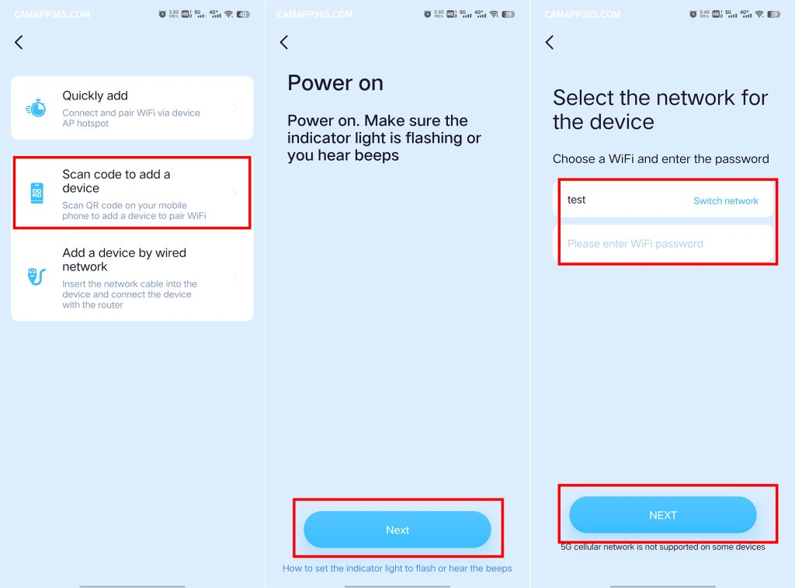
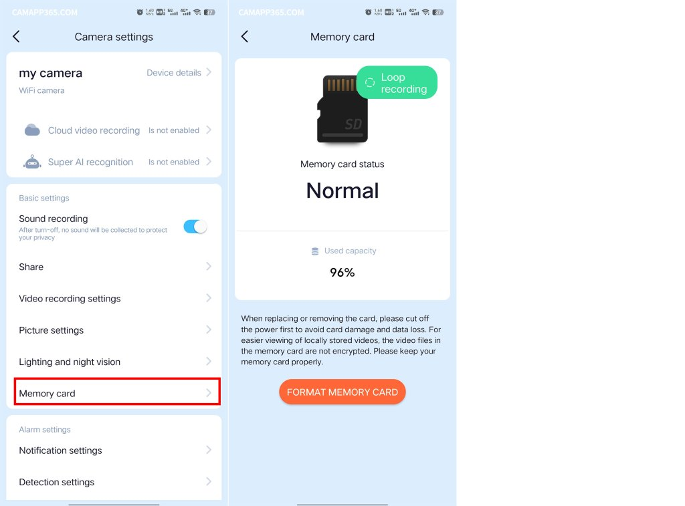
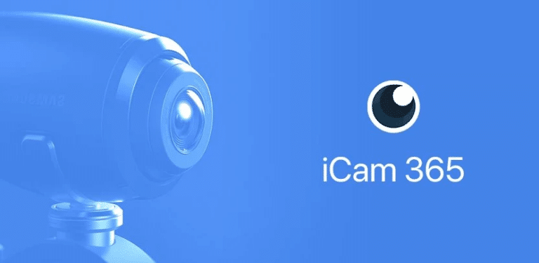
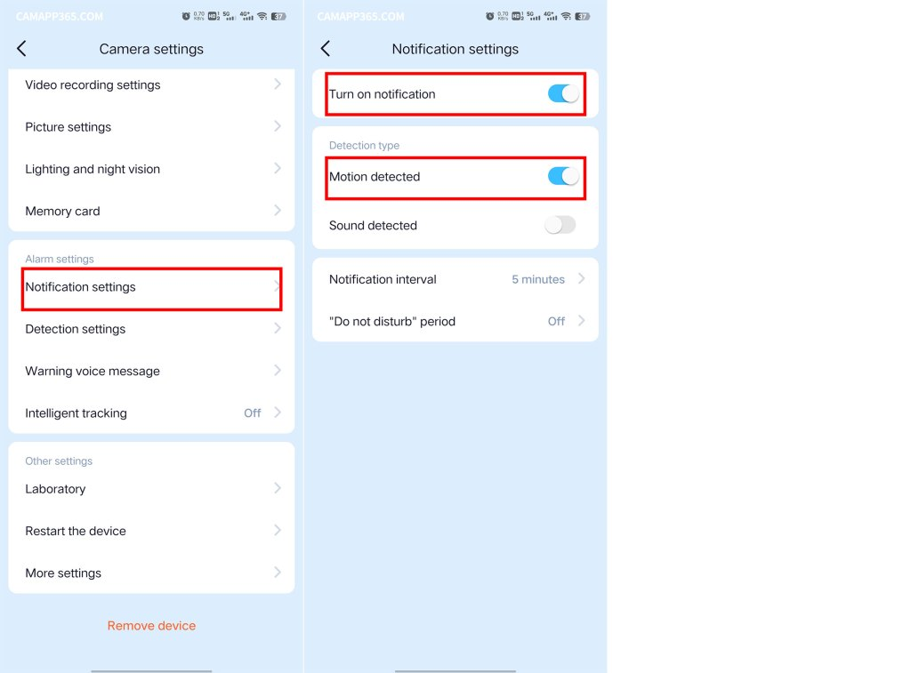

iCam365 避坑指南：用了大半年才摸透的六个暗雷
从 GPS 权限被拒到 TF 卡莫名报错，从 2.4G/5G 配网踩坑到云端中转延迟——这篇把 iCam365 最容易翻车的六个真实问题逐个拆开讲。
iCam365 这款摄像头 App 看着简单，注册扫码配网一气呵成，画面也能立刻出来。它的官网上产品说明和规格表写得相当清楚，但真用起来才发现，藏着好几个"不踩不知道、一踩吓一跳"的暗雷。我前前后后折腾了三台摄像头，从 WiFi 室内机到 4G 太阳能款，踩过的坑写出来给你当个提前量。
坑一：Android GPS 权限拒了就没救
症状：Android 手机上点开添加设备，App 先弹一个"请开启 GPS 定位服务"的提示，手滑点了拒绝——这下完了，配网页面直接卡死，点任何按钮都没反应，App 设置里也找不到"重新授权 GPS"的入口。
原因：Android 6.0+ 要求扫描周边 WiFi 必须申请地理位置权限，iCam365 的配网逻辑就卡在这里。它不扫 WiFi 列表就判断不了摄像头在不在附近、信号强不强，所以 GPS 一关整个流程就瘫痪。而 App 内部没做权限回收重走的兜底设计，拒了就是拒了。
解法：没有解法，只能卸载重装。下次装的时候弹权限申请，GPS 那项务必点"允许"——哪怕你觉得定位和摄像头没关系，App 自己知道它在干嘛。iOS 用户跳过这个坑，苹果不走这套。

坑二：双频合一路由器配完网还是离线
症状：摄像头刚配完网的时候状态灯闪几下就变常亮，语音提示也说"配置成功"，结果 App 里设备卡片还是灰色的，点进去显示"设备离线"。重启摄像头、重启路由器，来回折腾半小时没结果。
原因：iCam365 摄像头只能连 2.4G WiFi，不认 5G。现在大部分家用路由器默认"双频合一"，2.4G 和 5G 共用一个 SSID，手机能自动切但摄像头不会——它拿到的可能是 5G 的信号，连上了但因为硬件不支持，握手就失败了。
解法：进路由器后台把"双频合一"暂时关掉，让 2.4G 和 5G 各自一个 SSID，单独用 2.4G 那个去配网。配完再合回去也没事，摄像头会记住 2.4G 的 SSID 和密码，不会被切走。如果你嫌麻烦，App 里有个"故障排查"入口，重新配网时会强制让摄像头只扫 2.4G，也能解决。
坑三：实时画面一直转圈，90% 不是硬件坏了
症状：App 首页设备显示"在线"，点进去看实时画面，loading 圈转个十几秒然后超时。换了 WiFi、换了手机、换了摄像头电源，还是转。
原因：iCam365 的实时预览默认走云端中转——哪怕你的手机和摄像头在同一个局域网里，画面也要先传到探格的云服务器再回传到手机。这意味着公网抖动、运营商 DNS、云端负载都会影响你本地看画面的体验。另外，TF 卡坏了也可能导致主循环卡死、画面一直出不来。夜视时画面慢是正常现象，红外编码效率下降会让延迟涨到 2~3 秒，这个别当真。
解法：先检查有没有"局域网直连"开关——在设备设置里找，打开后同 Wi-Fi 下直接连摄像头、不走云端，延迟和稳定性都会好很多。没有这个开关说明 App 版本老，去应用商店更一下。实在搞不定就去icam365文档翻一下，还不行就断电重启摄像头，或者把 TF 卡格式化再试。

坑四：PC Player 装了才发现很多事做不了
症状：在应用商店没找到 Mac 版，Windows 版装完登录进去，发现界面上只有实时预览和回看，想给新摄像头配网、想调整移动侦测灵敏度、想购买云存储——按钮在哪？找不到。
原因：PC Player 是纯查看端，只有"看"的权限，没有"改"的权限。添加/删除设备、配网、云存储、AI 服务订阅、通知推送设置、分享设备——这些全都得在手机 App 上完成。很多人以为电脑版是功能完整的客户端，结果装了发现只能当大屏监视器用。Mac 用户更惨，官方根本没做 Mac 版，只能走 OEM 厂商的网页端（阉割到只剩实时预览）或者装安卓模拟器凑合用。
解法：安装包从官方下载拿，装之前先想清楚你要电脑版干嘛。如果是商铺前台常开一个显示器看画面、或者想批量导出 mp4 录像文件，那 PC Player 正合适。但所有配置操作还是要靠手机，这一点绕不开。

坑五：TF 卡容量突然见底，你得排查这四个地方
症状：前几天才格式化的 128G 卡，App 提示"存储空间不足"。进去一看，使用率快满了，可才用了不到一周，理论上至少能存二十多天的录像啊？
原因：四个常见原因，概率从高到低：
- 高清晰度 + 全天录像——1080P HD 2048 Kbps 全天录，128G 卡撑不到三周。
- 云存储和 TF 卡同时开了全天录像——两者独立计算空间，你感觉"怎么又快满了"，其实是两张存储在同时消耗。
- TF 卡有坏块——App 设备设置里能看错误次数，每天几次以上说明卡快坏了。
- 告警截图没清理——移动侦测触发时摄像头会自动保存关键帧快照，这些文件不参与录像循环覆盖，越积越多。
解法：录像清晰度选最低可用档，门口巡检、婴儿看护 SD 就够看清人形了。改成事件录像模式，只在有人触发时才录。定期在 App 里清一下告警截图，或者干脆在告警设置里关掉自动截图。如果错误次数频繁，趁还能读赶紧备份换卡。
坑六：Android 通知开了还是收不到
症状：移动侦测告警在 App 里能看到记录，但系统通知栏没有弹窗，锁屏也没推送。朋友用 iPhone 一切正常，就我的安卓机没反应。
原因：iCam365 Android 版走的是厂商推送通道（小米/华为/Firebase），国内 ROM 的系统优化会把后台推送掐掉。你装完 App 只点了"允许通知"是不够的，还得手动在系统设置里给 App 开三项权限：允许通知、自启动、忽略电池优化。少开一项，推送就会延迟甚至直接丢。
解法：进系统设置 → 应用管理 → iCam365 → 权限，把这三项全部打开。部分机型还要在"后台弹出界面"和"锁屏通知"那里单独授权。iPhone 用户同样绕过这个坑，APNs 通道系统自己管。

防坑清单
- GPS 权限别拒：Android 装完 App 第一个权限弹窗，GPS 务必点允许，拒了只能卸载重装。
- 配网前查频段：摄像头只认 2.4G，双频合一路由器先关掉再配网，或者用 App 故障排查强制 2.4G。
- 画面转圈先查开关：设备设置里找"局域网直连"，打开后同 Wi-Fi 不走云端中转，90% 的转圈问题直接消失。
- 录像模式改事件：全天录改成事件触发，TF 卡容量直接翻几倍用。
- 安卓通知要开三项：允许通知 + 自启动 + 忽略电池优化，一个都不能少。
iCam365 本身硬件质量和画面素质都在线，六个坑全是配网逻辑、平台差异、默认设置这类"软问题"——不是摄像头坏了，是开发者把很多细节藏得太深，第一次用很容易踩。知道这些点之后，这软件其实相当省心。另外配套的中文文档和软件安装包整理在三个代码仓库里都能拿到，国内访问不稳定时可以切 Gitee 或 GitCode，GitHub、Gitee、GitCode。